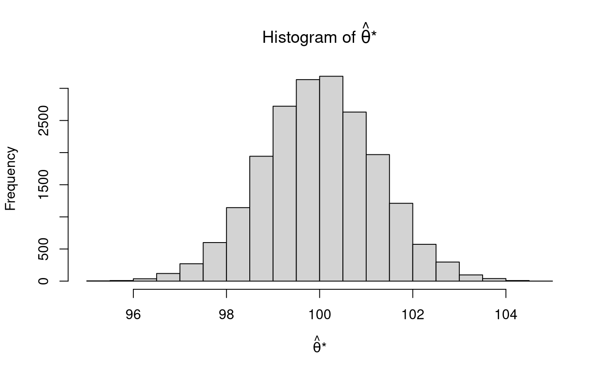
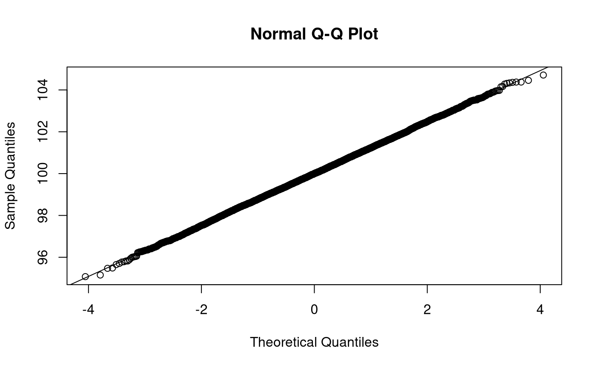
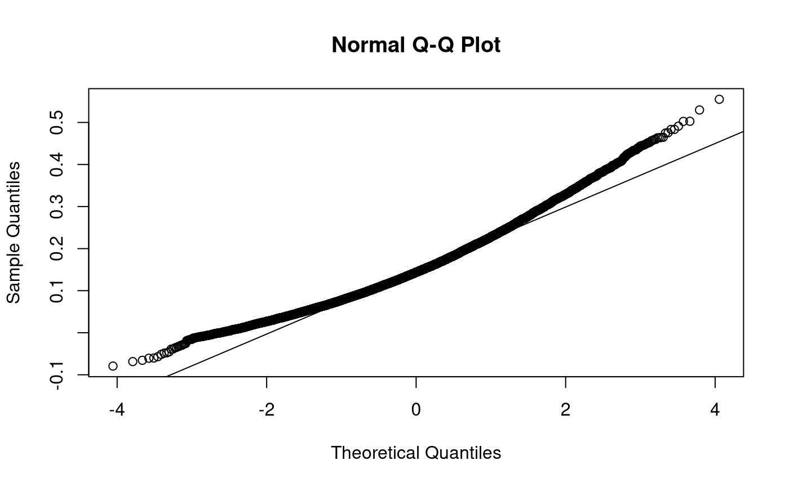

mc_star_length_1 <- mc( thetahat = thetahat, covhat_thetahat = covhat_thetahat, R = R ) str(mc_star_length_1) #> num [1:20000] 98.1 101.1 99.8 102.5 97.9 ... hist( mc_star_length_1, main = expression( paste( "Histogram of ", hat(theta), "*" ) ), xlab = expression( paste( hat(theta), "*" ) ) )


alphahat <- 0.3386 betahat <- 0.4510 alphahat_betahat <- alphahat * betahat alphahat_betahat_ci_2.5 <- 0.0033 alphahat_betahat_ci_97.5 <- 0.2979 varhat_alphahat <- 0.1224^2 varhat_betahat <- 0.1460^2 thetahat <- c( alphahat, betahat ) covhat_thetahat <- matrix( data = c( varhat_alphahat, 0.00, 0.00, varhat_betahat ), ncol = 2 )
mc_star_length_2 <- mc( thetahat = thetahat, covhat_thetahat = covhat_thetahat, R = R ) str(mc_star_length_2) #> num [1:20000, 1:2] 0.248 0.675 0.101 0.281 0.57 ... #> - attr(*, "dimnames")=List of 2 #> ..$ : NULL #> ..$ : NULL alphahat_betahat_star <- mc_star_length_2[, 1] * mc_star_length_2[, 2] hist( alphahat_betahat_star, main = expression( paste( "Histogram of ", hat(alpha), hat(beta), "*" ) ), xlab = expression( paste( hat(alpha), hat(beta), "*" ) ) )

test_that("ci_2.5", { expect_equivalent( alphahat_betahat_ci_2.5, wald_out["ci_2.5"], tolerance = 0.05 ) })
test_that("ci_97.5", { expect_equivalent( alphahat_betahat_ci_97.5, wald_out["ci_97.5"], tolerance = 0.05 ) })